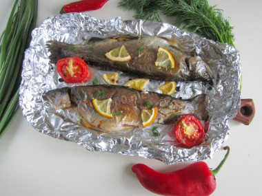
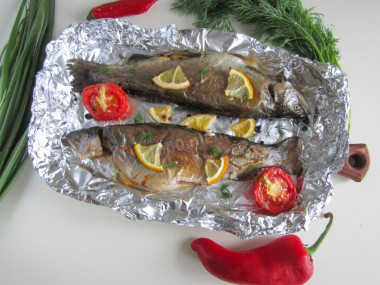
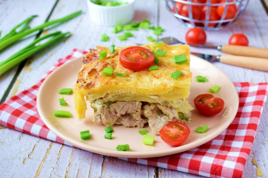
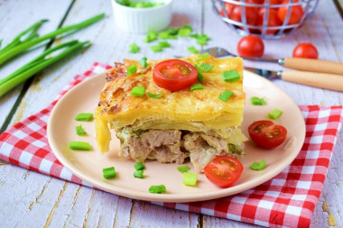

1)Гречка 1ск.;
2)Вода 2ск.;
3)Печериці 200гр.;
4)Цибуля 1шт.;
5)Морква 1шт.;
6)Олія 3ст. ложки;
7)Сіль за смаком;

Каша гречана в рукаві у духовці

1)Гречка 1ск.;
2)Вода 2ск.;
3)Печериці 200гр.;
4)Цибуля 1шт.;
5)Морква 1шт.;
6)Олія 3ст. ложки;
7)Сіль за смаком;
1)Овочі наріжте кубиком;
2)Гречку прожарити на сухій сковороді кілька хвилин, до появи характерного запаху. Вогонь зробіть маленьким, час від часу помішуйте крупу;
3)Розігрійте на сковороді на середньому вогні олію для смаження. Викладіть у нього цибулю та моркву. Обсмажте їх, помішуючи, до розм'якшення;
4)Викладіть до овочів печериці. Обсмажте разом, помішуючи, близько 10 хвилин. Щоб гриби дали сік, посоліть їх;
5)Візьміть форму для запікання. Відріжте шматок рукава завдовжки близько 80см. Один кінець зав'яжіть міцним вузлом. Встановіть рукав у форму. Висипте в нього гречку, викладіть обсмажені гриби з овочами. Влийте в рукав окріп. Кількість води візьміть у пропорції 1:2 – на одну частину крупи дві частини води. Посолити продукти, перемішати;
6)Зав'яжіть вільний кінець рукава. Зубочисткою зробіть кілька проколів для виходу пари. Встановіть форму із рукавом у духовку, розігріту до 180°С. Готуйте страву близько 30 хвилин. Гречка має ввібрати всю воду. Точний час залежить від особливостей вашої духовки;
7)Готову страву дістаньте з духовки, акуратно розріжте рукав;
8)Подавайте гречку до столу. Смачного!
Суп Клем Чаудер Класичний

1)Рибне філе 450гр.;
2)Картопля 2шт.;
3)Цибуля 1шт.;
4)Кукурудза 150гр.;
5)Бекон 2шт.;
6)Вершки(10%) 2ст.;
7)Вода 1лт.;
8)Борошно 1ст.ложка;
9)Петрушка,сіль,
перець за смаком;
1)Овочі та рибу наріжте кубиком;
2)Розігрійте на середньому вогні каструлю або сотейник із товстим дном. Викладіть у неї бекон. Обсмажте його до рум'яності, потім заберіть;
3)Висипте в розтопився жир цибулю. Вогонь зменште. Обсмажуйте цибулю 3-4 хвилини до золотистості;
4)Влийте в каструлю воду (окріп), додайте картоплю. Проварити суп 5-7 хвилин після закипання;
5)Викладіть шматочки риби та кукурудзу. Готуйте ще 3-5 хвилин;
6)Борошно насипте у невелику миску. Влийте в неї вершки тонким струмком при постійному помішуванні;
7)Вилийте вершки в каструлю із супом. Посоліть і поперчіть його. Дочекайтеся закипання та проваріть 5 хвилин;
8)Подавайте суп, посипавши його нарізаною петрушкою та розфарбованим беконом. Смачного!
Салат з куркою та крабовими паличками


1)Куряче філе 250гр.;
2)Крабові
палички 100гр.;
3)Яйця 4шт.;
4)Кукурудза 150гр.;
5)Помідори 1шт.;
6)Солодкий перець 1шт.;
7)Майонез 50гр.;
1)Яйця та курку необхідно заздалегідь відварити. Нарізане куряче м'ясо викладіть першим шаром салату і змастіть трохи майонезом;
2)Окремо наріжте крабові палички на маленькі кубики;
3)На курку викладіть шар нарізаний крабових паличок. І знову шар майонезу. Промазуйте майонезом усі шари салату;
4)З консервованої кукурудзи злийте рідину і викладіть третім шаром у кільце;
5)Потім іде солодкий перець, який необхідно дрібно нарізати;
6)Відварені яйця можна дрібно нарізати або натерти на тертці. Викладіть шар із яєць і трохи його притисніть. Змастіть верх майонезом і зніміть з салату кільце сервіровки;
7)Помідори можна викласти повноцінним шаром або лише як прикраса верху салату. Готовий салат трохи охолодіть перед подачею. Смачного!
Рубані курячі котлети з кабачком у духовці

1)Куряче філе – 500 г.;
2)Цибуля - 2 шт.;
3)Кабачки – 300гр.;
4)Манка – 2 ст.л.;
5)Яйце - 1 шт.;
6)Зелень – пучок;
7)Олія;
8)Сіль, перець
за смаком;
Якщо кабачок старий, його потрібно очистити від шкірки і насіння. З молодим овочом це робити не потрібно. Натерти кабачок на великій тертці. Дрібно нарізати цибулю та порубати зелень. Філе нарізати на невеликі шматочки гострим ножем. У нарізане філе вбити яйце та всипати спеції. Додати цибулю та зелень. З кабачків віджати руками сік і додати фаршу. Вимісити фарш до однорідності, потім додати манку і перемішати ще раз. Залишити на 20 хвилин, щоб манка набрякла. За цей час розігріти духовку до 200 °. Сформувати курячі котлети з овочами мокрими руками і викласти на змащений лист. Запікайте котлети 20 хвилин|мінути| при 200°. До столу подавайте не відразу - дайте страві трохи охолонути. Страва готова, смачного!;
Стейк із свинячої шиї на пательні

1)Свиняча шийка – 600 г.;
2)Олія- 2ст.лож.;
3)Перець чорний
мелений,сіль за смаком;
1)Свинячу шию потрібно заздалегідь дістати з холодильника і дати полежати в кімнаті не менше 1 години, щоб усередині м'яса було однакової температури. Потім свинину вимийте та обсушіть паперовими рушниками. Обсушувати м'ясо потрібно обов'язково, інакше воно не смажиться, а гаситиметься в м'ясному соку. Розріжте шматок поперек волокон на стейки завтовшки приблизно по 3 см кожен;
2)Змастіть стейки олією і посипте сіллю та перцем;
3)Сковороду з товстим дном розжарюйте на сильному вогні. Викладіть стейки та обсмажте 3-4 хвилини з одного боку;
4)Коли на м'ясі з'явиться рум'яна скоринка та чіткий малюнок від сковороди, переверніть стейк на інший бік. Вогонь трохи знизить і смажте м'ясо ще 5-7 хвилин, періодично перевертаючи. Щоб перевірити готовність, проткніть м'ясо ножем: якщо сік буде прозорий, значить готові стейки;
5)Після закінчення смаження приберіть сковороду з вогню, накрийте кришкою і залиште м'ясо на 10-15 хвилин, щоб соки рівномірно розподілилися по стейках;
6)Подавайте стейки із салатом із свіжих овочів та зелені. Смачного!
М'ясні рулети на вугіллі

1)Свинина 1кг.;
2)Вершкове масло 150 гр.;
3)Кріп 60 гр.;
4)Часник 3 зубч.;
5)Бекон 2шт.;
6)Сіль за смаком;
1)Наріжте м'ясо на порційні шматочки товщиною приблизно по 1,5-2 см. Кожен шматочок добре відбийте за допомогою кухонного молотка;
2)Для начинки візьміть зручну глибоку чашу та з'єднайте в ній м'яке вершкове масло, нарізаний кріп та подрібнені зубчики часнику. Додайте на свій смак сіль. Усі інгредієнти перемішайте один з одним за допомогою вилки;
3)Сироварний бекон, теж, наріжте на скибочки, шириною по 4-6 см.;
4)Кожен відбитий шматочок м'яса намажте олійною начинкою. Зовсім небагато - тонким шаром;
5)Потім викладіть на масляну начинку шматочки бекону, трохи не доходячи до краю. Згорніть м'ясо в рулет, починаючи з тієї частини, де початок бекону.Покладіть рулети в холодильник на 3 год.;
6)Викласти на решітку і готувати на гарячому вугіллі, періодично перевертаючи, щоб вони готувалися найбільш рівномірно;
7)Готові рулети виходять ароматні та шалено смачні! Частуйтесь на здоров'я!
Ціла форель в духовці запечена
 

1)Форель 2шт.;
2)Олія 4 стол.лж.;
3)Часник 2 зубч.;
4)Лимон 0,5 шт.;
5)Кріп 10 гр.;
6)Сіль,перець за смаком;
1)Рибу необхідно спочатку розморозити. Краще робити це у холодильнику. Так риба збереже соковитість та правильну структуру. Я поміщаю рибу в холодильник і залишаю на ніч для розморожування. Рибу випатрайте і промийте. Посоліть і поперчіть зовні та всередині. Зі спеціями не переборщіть, щоб форель не втратила свій справжній смак;
2)Дно форми для запікання застелите фольгою і викладете на неї рибу. Полийте олією;
3)Лимон наріжте тонкими скибочками, часник - невеликими шматочками. Змастіть рибу часником і викладіть на неї скибочки лимона. Можна за бажанням разом із рибою запекти Ваші улюблені овочі;
4)Щільно загорніть тушки форелі у фольгу. Запікайте рибу приблизно 15 хвилин|мінути| при температурі 200 °С. Потім розгорніть і запікайте ще 5-10 хвилин|мінути| до рум'яної скоринки. Часу може знадобитися трохи більше або менше орієнтуйтеся по духовці. Готову рибу посипте свіжим подрібненим кропом або будь-якою іншою зеленню, на Ваш смак. Форель запечена цілком у духовці готова.Смачного!
Стейк з форелі на пательні

1)Стейк з форел1 1кг.;
2)Олія 20мл.;
3)Сіль 8 гр.;
4)Цукор 10 гр;
5)Розмарин свіжий 20 гр.;
6)Тимьян, чабрец 20 гр.;
7)Перець,лимон,зелень
за смаком;
1)Для цієї страви знадобиться тільки рибне філе, яке необхідно нарізати на стейки приблизно однакового розміру та товщини не більше 2 см.Рибу потрібно розморозти при кімнатній температурі;
2)Сковороду з антипригарним покриттям поставити на вогонь, налити в неї зовсім небагато олії без запаху і нагріти. Потім кинути в розпечену олію гілочки свіжого розмарину та чебрецю.Прогріти спеції протягом однієї хвилини;
3)Далі, не виймаючи розмарин та чебрець, покласти в сковороду стейки форелі. Зверху на рибу посипати суміш із солі, цукру та чорного перцю. Обсмажити форель з одного боку до рум'яного кольору протягом 3-4 хвилин і перевернути стейки на інший бік. Знову приправити рибу спеціями, що залишилися, і підсмажити стейки з іншого боку ще близько 3 хвилин до апетитної золотистої скоринки;
4)Після чого накрити сковороду кришкою, зменшити вогонь і готувати рибу протягом 3-4 хвилин. Перевірити рибні стейки на готовність – для цього проткнути їх гострим кінцем вилки чи ножем. Рідина, що виходить із риби, повинна бути прозорою. Якщо сік риби каламутний, значить риба ще сира і її потрібно досмажити;
5)Викласти рибу на тарілку. Прикрасити рибу часточками лимона та свіжою зеленню;
6)Смачного!
Горбуша смажена на пательні

1)Горбуша 600 гр.;
2)Олія 20мл.;
3)Лимон 0.3шт.;
4)Сіль,спеції
за смаком;
1)Тушку риби можна розрізати вздовж на 2 частини або нарізати стейками, завтовшки 2-3 см. Я використовую прованські трави.Кожен шматочок трохи збризкайте соком лимона;
2)Потім посипте рибу з двох сторін невеликою кількістю солі та спеції. Залишіть її хвилин на 15, щоб вона трохи промаринувалась;
3)Сковороду гриль поставте на вогонь та розігрійте до гарячого стану. Трохи змастіть сковороду олією. Викладіть на гарячу сковороду підготовлені рибні стейки та обсмажте їх по 2-3 хвилини з кожного боку;
4)Якщо шматочок риби ще відділяється від сковороди, вона ще готова. Зачекайте ще трохи. Добре смажена риба легко відходить від сковороди;
5)Готову рибу подавайте відразу ж у гарячому вигляді. горбуша на сковороді гриль дуже смачна! Доповніть стейки зеленню, свіжими овочами чи запеченою картоплею. Смачного!;
Овочеве рагу в горщечках із духовки
1)Картопля 3 шт.;
2)Морква 1 шт.;
3)Цибуля 1 шт.;
4)Баклажани 2 шт.;
5)Молоді кабачки 1шт.;
6)Солодкий перець 1 шт.;
7)Помідори 1шт.;
8)Овочевий
бульйон 100 мл;
9)Лимонний сік 2 чайн.;
10)Цукор 1 чайн.л.;
11)Зелень,перець,сіль
за смаком;
1)Каротплю порізати кубиком,цибулю тонкими четвертинками,моркву кружечками,баклажани та кабачки наріжте кубиком,помідори та перець наріжте;
2)Візьміть жароміцні горщики. Викладіть у них овочі за таким принципомбспочатку картопля,цибуля,морква.Потім баклажан та кабачки.Зверху перець та помідор.Посипати спеціями;
3)Встановіть горщики на лист, накрийте їх кришками.Розігрійте духовку до 180 °С.Тушкуйте рагу протягом 40-50 хвилин, залежно від набору овочів. Готове рагу вийміть, трохи остудіть і подавайте до столу;
4)Можете посипати його зеленню під час подачі і поставити на стіл прямо в горщиках, в яких воно запікалося. Або викласти на тарілки. Смачного!
Картопля в духовці


1)Картопля 700 гр;
2)Олія1 стол.;
3)Сіль (без гірки)
1 чайн.;
4)Паприка,каррі,
перець за смаком;
1)Підготовлену картоплю наріжте часточками. Додайте рослинну олію, сіль і прянощі. Перемішайте картоплю руками, щоб олія з прянощами рівномірно розподілилася по всій поверхні;
2)На лист викладіть часточки, поставивши їх на ребро. Це забезпечить ідеальне пропікання та рівномірну скоринку;
3)Поставьте картофельные дольки в предварительно разогретую до 190-200 градусов духовку. Запекайте примерно 30-40 минут;
4)Готові картопляні часточки, запечені в духовці, подавайте в гарячому вигляді з одним або декількома соусами.Смачного!
Картопля з м'ясом в духовці
 

1)М'ясо будь-яке 500 гр;
2)Картопля 900 гр;
3)Зелена цибуля 20 гр;
4)Вершкове масло 20 гр;
5)Сир будь-який 200 гр;
6)Часник 2 зубч.;
7)Вершки(15%) 0.5 скл.;
8)Сіль та спеції
за смаком;
1)М'ясо наріжте на невеликі шматочки і трохи відбийте кухонним молоточком. Відбите м'ясо складіть у невелику чашу, посипте сіль та спеції. Додайте подрібнений часник і дайте йому постояти 5-10 хвилин;
2)Дно та боки форми змастіть шматочком вершкового масла та скибочками часнику. Викладіть у форму всі підготовлені шматочки м'яса. Розподіліть їх рівномірно по всьому дну. Перчики зеленої цибулі наріжте і посипте на м'ясо;
3)Картоплю поріжте так, щоб були тонкі слайси. Перемішайте картоплю з сіллю та спеціями. Підготовлені вершки трохи підсоліть і поперчіть. Полийте ними картоплю;
4)Поверхню картоплі посипте тертим сиром і поставте форму в духовку, попередньо розігріту до 200 градусів, приблизно на 45-50 хвилин. Картопля з м'ясом готова! Вийміть форму з духовки і подавайте до столу в гарячому вигляді. Смачного!
Дякуємо,що користуетесь нашим сайтом.Якщо Ви хочете побачити свої рецепти на сайті ,звертайтеся за поштою.
cookeasy.email@gmail.com
Write now